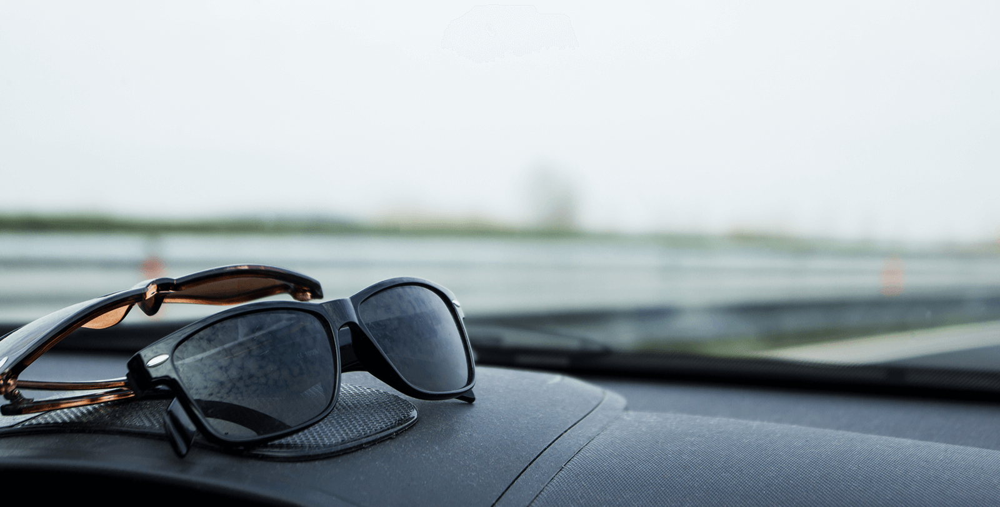

ZEISS cleaning solutions.
finally Enjoy clear vision by ensuring that your lenses last for a long time.
Achieve clear vision in seconds. ZEISS cleaning solutions gently remove dirt, dust or grease from your lenses and prevent. This way your lenses remain cleaner for longer and the lens coating is protected, guaranteeing flawless vision and increasing the longevity of your glasses.

Clear vision 100% of the time:
ZEISS cleaning solutions for spectacle lenses.
Gentle, easy, effective.
Modern lens coatings already make lens care easier by repelling dirt, but no spectacle wearer can get around cleaning their glasses from time to time. Our different cleaning solutions for your glasses are comfortable to use and gentle on your lenses: ZEISS pre-moistened lens cleaning wipes are perfect for quickly wiping off your lenses occasionally, and our ZEISS lens cleaning spray with a ZEISS microfibre cloth enables you to clean your lenses efficiently without leaving any residue.
With the ZEISS AntiFOG spray, your lenses remain crystal clear, even in very damp air or when transitioning from a cold environment to a warm one.
Optician Search
Find a Zeiss Optician near you
A protective and effective solution. Even when you're in a hurry.
Using your sleeve, tie or a tissue might be handy, but these really aren't suitable for cleaning your lenses. ZEISS lens cleaning wipes are gentle on your lenses, ensure streak-free results and are just as quick as your sleeve. They feature an exceptionally fine structure pre-moistened with a unique combination of cleaning agents, ensuring that your lenses aren't subjected to any of the aggressive substances contained in many lens cleaners. Good for you – and for your glasses.
OGive your lenses a gentle,
thorough cleaning.
The perfect team for cleaning your lenses gently but thoroughly: our ZEISS microfibre cloth in combination with the ZEISS lens cleaning spray. It's as efficient as a thorough cleaning under running water with a pH-neutral cleaning agent.
Keep your spectacle lenses from fogging up. For up to three days.
Comfortable and effective over the long term. Stop your glasses from fogging up with ZEISS AntiFOG spray. This care spray is applied to both sides of the lens after cleaning and protects them from irritating lens misting – for up to 72 hours.
Scratches and dirt don't stand a chance. More robust than ever.
High-performance lens coatings make your glasses extremely durable against scratches or adhesive dirt. The benefit: your lenses remain dirt-free for longer, making them significantly easier to clean. See better, look better – thanks in part to the latest anti-reflective coating.


5 Tips for cleaning your lenses

1. Don't just reach for your tissue, tie or sleeve to clean your glasses – you're not doing your lenses any favours. Don't forget: proper lens care increases the longevity of your lenses and ensures better vision. Even when you're on the go, make sure you use cleaning products from trusted experts in the optics industry.
2. Don't wash microfibre cloths in water warmer than 40° C and don't add fabric softener – otherwise the cloth will leave streaks the next time you clean your glasses.
3. Scratches can't be wiped away, no matter if you have plastic or glass lenses. In this case, prevention is advisable because scratched lenses should be replaced immediately. Even if the defect only appears cosmetic, light disperses through the tiny scratch, irritating the eye. That's why it's important to clean your lenses with a special, microfibre cloth.

4. Your glasses need a home! Store them in a hard case whenever you're not wearing them. If you don't have a case with you, make sure you put them in a safe spot with the lenses facing upwards.
